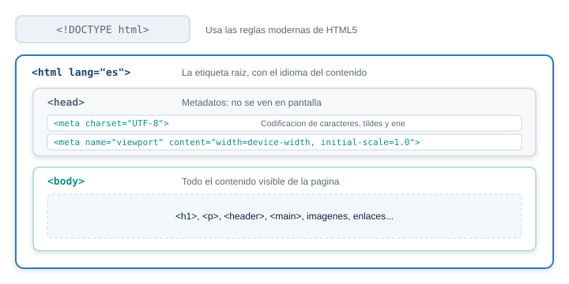
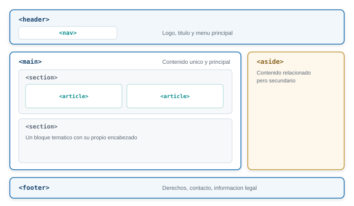
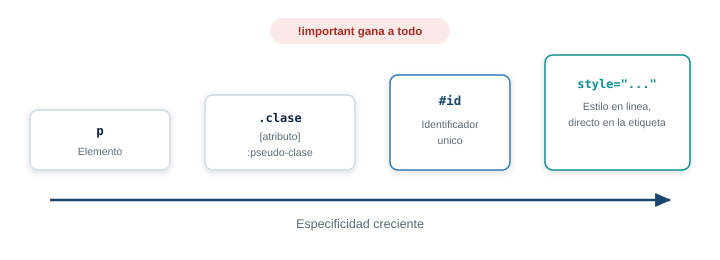
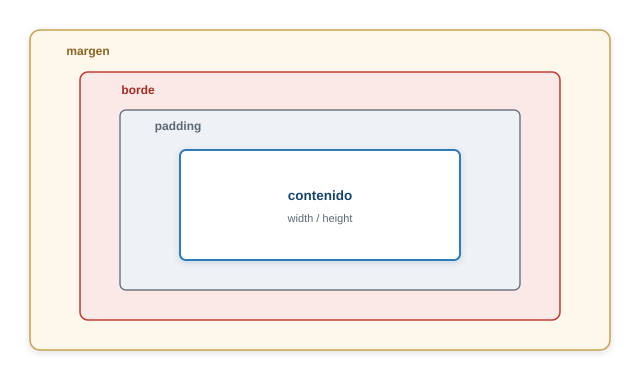
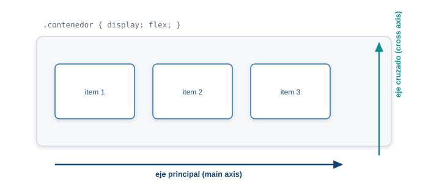
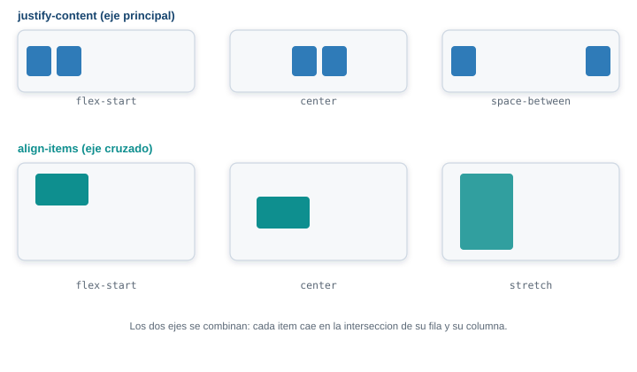
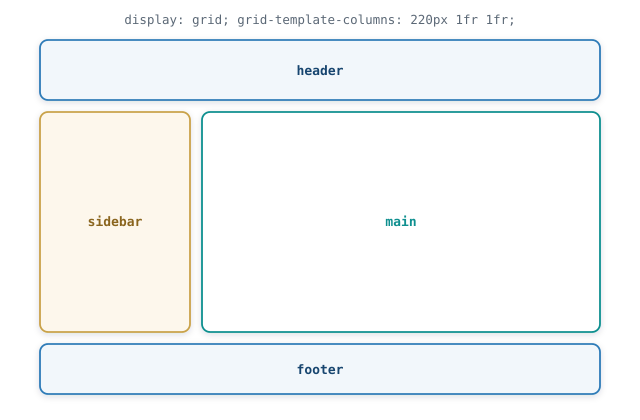
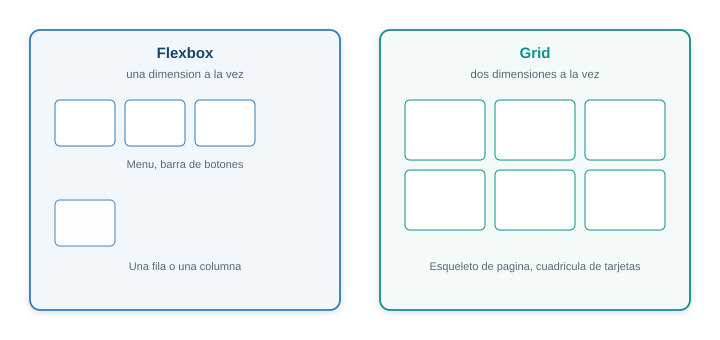
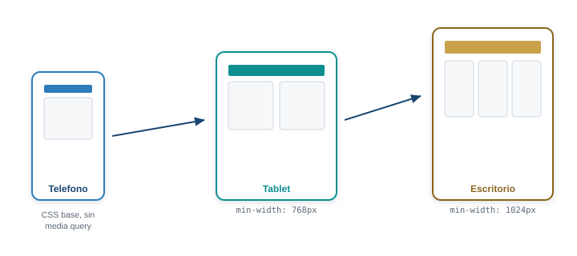
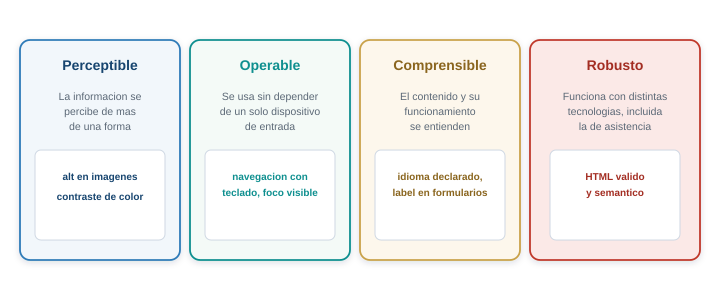

Semana 5. HTML5 y CSS3: maquetación semántica y diseño responsivo
| Asignatura | Programación Web (IF2003) |
| Grupo | 603 de Ingeniería Informática |
| Unidad | Unidad 2. Frontend |
| Evaluación | 10% del curso |
Diapositivas de la sesión
1 Lo que vas a lograr
Hasta ahora tu proyecto tiene control de versiones, pero ninguna página real. Esta semana la construyes: la portada de tu proyecto, con una estructura que un lector de pantalla puede navegar, que se acomoda igual de bien en un teléfono que en un monitor, y que no se cae si le cambias el contenido.
Al terminar la guía sabes:
- Explicar qué hace el navegador con un documento HTML y por qué el orden de las etiquetas importa.
- Escribir HTML con los elementos correctos según lo que representa cada parte de la página: encabezados, listas, tablas, formularios y las secciones semánticas de HTML5.
- Aplicar CSS con selectores, cascada y el modelo de caja, sin sorpresas de por qué una regla no se aplica.
- Maquetar con Flexbox y con CSS Grid, y decidir cuál usar según el problema.
- Construir un diseño responsivo con la estrategia mobile-first, media queries y unidades fluidas.
- Aplicar los principios básicos de accesibilidad web (WCAG) y verificarlos con las herramientas del navegador.
- Tener la página principal de tu proyecto terminada, adaptada a móvil y a escritorio.
Necesitas el repositorio de tu proyecto de la Semana 2, con VS Code abierto sobre esa carpeta. Instala la extensión Live Server (Ritwick Dey) desde el panel de extensiones de VS Code: te deja ver la página en el navegador y la recarga sola cada vez que guardas un archivo. Click derecho sobre un .html y Open with Live Server.
No necesitas nada más. Todo lo de esta semana es HTML y CSS puro, sin instalar nada adicional.
2 Parte 1. HTML5, el lenguaje que estructura la página
Anatomía de un documento
Todo documento HTML válido tiene la misma forma mínima:
<!DOCTYPE html>
<html lang="es">
<head>
<meta charset="UTF-8">
<meta name="viewport" content="width=device-width, initial-scale=1.0">
<title>Mi proyecto</title>
</head>
<body>
<h1>Contenido visible</h1>
</body>
</html>
Todo lo que va dentro de head es información sobre la página. Todo lo que va dentro de body es lo que ve la persona que la visita.
Línea por línea:
| Línea | Qué hace |
|---|---|
<!DOCTYPE html> |
Le dice al navegador que interprete el documento con las reglas modernas de HTML5, no con un modo de compatibilidad de los años 90 |
<html lang="es"> |
La etiqueta raíz, contiene todo lo demás. lang="es" declara el idioma del contenido: un lector de pantalla lo usa para elegir la pronunciación correcta, y un traductor automático lo usa para saber desde qué idioma traducir |
<head> |
Metadatos: información sobre la página que el navegador necesita pero que no dibuja en el cuerpo de la ventana |
<meta charset="UTF-8"> |
Fija la codificación de caracteres. Sin esta línea, o con una equivocada, las tildes y la eñe se ven como símbolos rotos |
<meta name="viewport" content="width=device-width, initial-scale=1.0"> |
Le dice al navegador de un celular que use el ancho real de la pantalla en vez de simular un monitor de escritorio reducido. Sin esta línea, el diseño responsivo de la Parte 2 no funciona en ningún teléfono |
<title> |
El texto que aparece en la pestaña del navegador y en los resultados de un buscador |
<body> |
Todo el contenido visible de la página |
<meta charset="UTF-8"> y la etiqueta viewport van siempre, en todo documento que escribas este semestre. No son opcionales ni decorativas.
Etiquetas, atributos y anidamiento
Una etiqueta casi siempre viene en pareja: una de apertura y una de cierre, con el contenido en medio.
<p>Esto es un párrafo.</p>Algunas etiquetas no tienen contenido ni cierre, porque su información completa vive en los atributos: son elementos vacíos.
<img src="logo.png" alt="Logo del proyecto">
<br>
<input type="text">
<meta charset="UTF-8">Un atributo es un par nombre="valor" que va dentro de la etiqueta de apertura y agrega información. Una etiqueta puede llevar varios:
<a href="https://iue.edu.co" target="_blank" rel="noopener">Sitio de la IUE</a>href dice a dónde va el enlace, target="_blank" lo abre en una pestaña nueva, rel="noopener" es una medida de seguridad que se agrega siempre que uses target="_blank": evita que la página nueva pueda acceder a la ventana que la abrió.
El anidamiento es meter una etiqueta dentro de otra. La regla es simple pero se rompe seguido: la que se abre última se cierra primera.
<!-- Correcto -->
<p>Un <strong>texto importante</strong> dentro de un párrafo.</p>
<!-- Incorrecto: las etiquetas se cruzan -->
<p>Un <strong>texto importante</p></strong>Indenta cada nivel de anidamiento con dos espacios más que el nivel anterior. No cambia cómo se ve la página, pero es la diferencia entre un archivo que puedes leer y uno que no.
Los comentarios no se muestran en el navegador y sirven para dejarte notas a ti mismo:
<!-- Esto es un comentario, el navegador lo ignora -->Algunos caracteres tienen un significado especial en HTML (<, >, &) y si los escribes tal cual, el navegador los interpreta como el inicio de una etiqueta. Para mostrarlos como texto se usan entidades HTML:
| Quieres mostrar | Escribes |
|---|---|
< |
< |
> |
> |
& |
& |
| Espacio que no se puede partir en dos líneas | |
| Comillas dobles dentro de un atributo | " |
Elementos de texto
Los encabezados van de <h1> a <h6>, en orden de importancia, no de tamaño. El tamaño se ajusta con CSS; la jerarquía de los encabezados es la que un lector de pantalla usa para armar un índice navegable de la página, así que debe existir un solo <h1> por página, el título principal, y los demás niveles no se saltan (un <h3> no aparece antes de haber usado algún <h2>).
<h1>Título del proyecto</h1>
<h2>Sección principal</h2>
<h3>Subsección dentro de esa sección</h3>Los párrafos usan <p>. Las listas tienen tres formas:
<!-- Lista sin orden: el orden de los elementos no importa -->
<ul>
<li>HTML</li>
<li>CSS</li>
<li>JavaScript</li>
</ul>
<!-- Lista ordenada: el orden importa -->
<ol>
<li>Escribe el HTML</li>
<li>Agrega el CSS</li>
<li>Verifica en el navegador</li>
</ol>
<!-- Lista de definiciones: termino y su descripcion -->
<dl>
<dt>HTML</dt>
<dd>Estructura el contenido de la página</dd>
<dt>CSS</dt>
<dd>Define su apariencia</dd>
</dl>Para citar contenido de otra fuente existe <blockquote> (una cita larga, en bloque) y <q> (una cita corta, dentro de una línea, y el navegador le agrega las comillas solo).
<strong> marca importancia semántica (un lector de pantalla puede cambiar el tono de voz) y <em> marca énfasis. Sus primos visuales <b> y <i> cambian el aspecto (negrita, cursiva) sin decir nada sobre el significado: usa strong y em casi siempre, y b/i solo cuando de verdad quieres negrita o cursiva sin implicar importancia (por ejemplo, un término técnico la primera vez que aparece).
Los enlaces se hacen con <a href="...">. El texto entre las etiquetas debe describir a dónde lleva el enlace: “Ver el repositorio en GitHub” ayuda a quien navega con lector de pantalla, “click aquí” no dice nada fuera de contexto.
<span> y <div> no significan nada por sí mismos: son contenedores genéricos que existen solo para poder aplicarles CSS o JavaScript. <div> es de bloque (ocupa todo el ancho disponible y empieza en una línea nueva), <span> es en línea (solo ocupa el espacio de su contenido, dentro del flujo del texto). Úsalos únicamente cuando ninguna etiqueta semántica encaja con lo que representa ese contenido; la siguiente sección explica las que sí tienen significado propio.
Elementos semánticos de HTML5
Antes de HTML5, toda página se armaba con <div> anidados, distinguidos solo por atributos id o class con nombres como id="header" o class="nav". El navegador no tenía forma de saber que ese div era el encabezado del sitio: para él, era un contenedor genérico igual a cualquier otro.
HTML5 agregó etiquetas que describen el papel de cada sección de la página, sin cambiar cómo se ve por defecto:

La misma distribución que antes se armaba solo con div con nombres de clase.
| Elemento | Qué representa |
|---|---|
<header> |
El encabezado de la página o de una sección: logo, título, navegación principal |
<nav> |
Un bloque de enlaces de navegación (el menú principal, un índice, la paginación) |
<main> |
El contenido principal y único de la página. Aparece una sola vez |
<section> |
Un bloque temático con su propio encabezado, parte de un documento más grande |
<article> |
Contenido que tiene sentido por sí solo, independiente del resto de la página (una noticia, una entrada de blog, una tarjeta de producto) |
<aside> |
Contenido relacionado pero secundario: una barra lateral, una nota, publicidad |
<footer> |
El pie de la página o de una sección: derechos, enlaces de contacto, información legal |
Por qué importa usar estos elementos en vez de <div> genéricos:
- Accesibilidad. Un lector de pantalla arma con ellos un mapa de “puntos de referencia” (landmarks): quien lo usa puede saltar directo a
main, o pedir la lista de todas las seccionesnav, en vez de escuchar la página entera de corrido. - SEO. Los buscadores usan la estructura semántica para entender qué parte de la página es el contenido real y cuál es navegación o relleno, y eso influye en cómo indexan la página.
- Mantenibilidad. Seis meses después,
<main>y<footer>se explican solos.<div id="cosa2">no.
Un ejemplo de página completa con estos elementos:
<body>
<header>
<h1>Nombre del proyecto</h1>
<nav>
<ul>
<li><a href="#inicio">Inicio</a></li>
<li><a href="#servicios">Servicios</a></li>
<li><a href="#contacto">Contacto</a></li>
</ul>
</nav>
</header>
<main>
<section id="inicio">
<h2>Bienvenido</h2>
<p>Descripción del proyecto.</p>
</section>
<section id="servicios">
<h2>Servicios</h2>
<article>
<h3>Servicio uno</h3>
<p>Descripción del servicio.</p>
</article>
<article>
<h3>Servicio dos</h3>
<p>Descripción del servicio.</p>
</article>
</section>
<aside>
<h2>Dato relacionado</h2>
<p>Contenido secundario, no imprescindible para entender la página.</p>
</aside>
</main>
<footer>
<p>Proyecto IF2003, Semestre 2026-02.</p>
</footer>
</body>Nota que section y article no reemplazan a div: úsalos cuando el bloque tiene sentido temático propio (una sección con su propio título, una tarjeta de contenido independiente). Un div que solo existe para poder darle un padding con CSS sigue siendo un div, y eso está bien.
Este fragmento funciona, pero no dice nada sobre su estructura:
<div id="top">
<div class="title">Mi Blog</div>
<div class="menu">
<div><a href="#">Inicio</a></div>
<div><a href="#">Artículos</a></div>
</div>
</div>
<div id="content">
<div class="post">
<div class="post-title">Mi primera entrada</div>
<div class="post-body">Contenido de la entrada.</div>
</div>
</div>
<div id="bottom">Derechos reservados 2026</div>Reescríbelo usando header, nav, main, article y footer donde corresponda. No cambies el contenido, solo las etiquetas.
<header>
<h1>Mi Blog</h1>
<nav>
<a href="#">Inicio</a>
<a href="#">Artículos</a>
</nav>
</header>
<main>
<article>
<h2>Mi primera entrada</h2>
<p>Contenido de la entrada.</p>
</article>
</main>
<footer>
<p>Derechos reservados 2026</p>
</footer>#top era el encabezado de la página entera, con el título y el menú: eso es exactamente lo que header y nav describen. .post tenía sentido por sí sola, independiente del resto: es un article. #bottom era el pie: footer. El título del blog usa h1 porque es el título principal de la página, y el título de la entrada usa h2 porque está un nivel abajo.
Tablas
Una tabla representa datos tabulares: filas y columnas donde cada celda tiene sentido en relación con su fila y su columna. No es una herramienta de maquetación: antes de que existiera CSS, algunas páginas usaban tablas invisibles para acomodar el diseño, y esa práctica se abandonó por completo porque rompe la accesibilidad y hace el HTML ilegible.
<table>
<caption>Horario de clases</caption>
<thead>
<tr>
<th scope="col">Día</th>
<th scope="col">Materia</th>
<th scope="col">Hora</th>
</tr>
</thead>
<tbody>
<tr>
<td>Miércoles</td>
<td>Programación Web</td>
<td>6:00 am</td>
</tr>
<tr>
<td>Sábado</td>
<td>Programación Web</td>
<td>8:00 am</td>
</tr>
</tbody>
</table><caption> describe la tabla para quien la escucha con un lector de pantalla. <thead> agrupa la fila de encabezados, <tbody> agrupa los datos. scope="col" en cada <th> declara que ese encabezado aplica a toda su columna, lo que permite que un lector de pantalla anuncie “Materia: Programación Web” al leer una celda, en vez de solo el valor suelto.
Formularios
Un formulario recoge información de quien visita la página. Casi todo lo que vas a construir este semestre (registro, contacto, búsqueda) pasa por un <form>.
<form action="/enviar" method="post">
<fieldset>
<legend>Datos de contacto</legend>
<label for="nombre">Nombre completo</label>
<input type="text" id="nombre" name="nombre" required minlength="3">
<label for="correo">Correo</label>
<input type="email" id="correo" name="correo" required>
<label for="edad">Edad</label>
<input type="number" id="edad" name="edad" min="16" max="99">
<label for="tema">Tema del mensaje</label>
<select id="tema" name="tema">
<option value="consulta">Consulta general</option>
<option value="soporte">Soporte técnico</option>
</select>
<label for="mensaje">Mensaje</label>
<textarea id="mensaje" name="mensaje" rows="4" required></textarea>
<label>
<input type="checkbox" name="acepta" required>
Acepto el tratamiento de mis datos
</label>
<button type="submit">Enviar</button>
</fieldset>
</form>labelyfor. El atributofordellabeldebe coincidir exactamente con eliddel campo. Esto no es cosmético: conecta la etiqueta con su campo, así que al hacer click en el texto “Correo” el cursor entra directo alinput, y un lector de pantalla anuncia “Correo, campo de texto” en vez de leer elinputsin ningún nombre. Un formulario sin esta relación es uno de los errores de accesibilidad más comunes y más fáciles de evitar.- Tipos de
inputrelevantes.text,email(valida el formatoalgo@algo),password(oculta lo escrito),number(conmin/max),checkbox,radio(varios con el mismonameforman un grupo donde solo se puede elegir uno),date. Elegir el tipo correcto no es solo semántico: en un celular,type="email"muestra un teclado con el símbolo@a la mano, ytype="number"muestra un teclado numérico. fieldsetylegend. Agrupan campos relacionados bajo un título común, útil en formularios largos con varias secciones.- Validación nativa.
requiredobliga a llenar el campo,minlength/maxlengthfijan largo de texto,patternacepta una expresión regular,min/maxfijan rango numérico. El navegador bloquea el envío y muestra un mensaje si no se cumplen, sin necesitar una sola línea de JavaScript. La Semana 7 agrega validación adicional en JavaScript, pero la nativa siempre va primero porque funciona incluso si el script falla en cargar.
Imágenes y su texto alternativo
<img src="logo.png" alt="Logo del proyecto IF2003" width="120" height="120">alt no es un comentario ni un dato decorativo: es el texto que un lector de pantalla dice en lugar de la imagen, y es lo que se muestra si la imagen no carga. Toda imagen que aporte información lleva un alt que describe esa información, no que repite “imagen de” al principio.
<!-- Describe lo que aporta la imagen -->
<img src="grafico-ventas.png" alt="Ventas del primer trimestre, con un aumento del 20% en marzo">
<!-- Imagen puramente decorativa: alt vacio, no se omite el atributo -->
<img src="linea-decorativa.png" alt="">alt="" (vacío, pero presente) le dice al lector de pantalla que ignore la imagen por completo, porque no aporta información. Omitir el atributo alt es distinto y peor: ahí el lector de pantalla suele leer el nombre del archivo, algo como “logo dash final dos punto png”, que no dice nada.
width y height no son solo para el tamaño: le avisan al navegador el espacio que va a ocupar la imagen antes de que termine de descargarla, evitando que el resto de la página “salte” cuando la imagen aparece.
3 Parte 2. CSS3 moderno: cómo se ve la página
Cómo se conecta CSS con HTML
CSS (Cascading Style Sheets) define la apariencia: colores, tamaños, espaciados, disposición. Se conecta al HTML de tres formas, y solo una es la práctica recomendada:
<!-- Externo: la practica recomendada. Un archivo aparte, reutilizable en toda la pagina -->
<link rel="stylesheet" href="estilos.css">
<!-- Embebido: valido, pero mezcla estructura y apariencia en el mismo archivo -->
<style>
h1 { color: navy; }
</style>
<!-- En linea: evitalo salvo una prueba puntual. No se puede reutilizar ni sobrescribir con facilidad -->
<h1 style="color: navy;">Título</h1>estilos.css va enlazado dentro de <head>. La sintaxis de una regla es siempre la misma: un selector (a qué le aplica) y un bloque de declaraciones entre llaves, cada una propiedad: valor;.
h1 {
color: navy;
font-size: 2rem;
}Selectores
/* Por elemento: aplica a todos los <p> */
p { color: #333; }
/* Por clase: aplica a cualquier elemento con class="destacado" */
.destacado { background: yellow; }
/* Por id: aplica a un unico elemento, el que tiene id="titulo-principal" */
#titulo-principal { font-size: 3rem; }
/* Por atributo: aplica a los input de tipo email */
input[type="email"] { border-color: teal; }
/* Descendiente: cualquier <a> dentro de un <nav>, sin importar cuantos niveles */
nav a { text-decoration: none; }
/* Hijo directo: solo los <li> que son hijos inmediatos de ese <ul> */
ul > li { margin-bottom: 0.5rem; }
/* Hermano adyacente: el <p> que viene justo despues de un <h2> */
h2 + p { font-weight: bold; }
/* Hermano general: cualquier <p> que venga despues de un <h2>, dentro del mismo padre */
h2 ~ p { color: gray; }Las pseudo-clases seleccionan un elemento según un estado o una posición, no según su etiqueta o atributo:
a:hover { color: crimson; } /* mientras el mouse esta encima */
li:first-child { font-weight: bold; } /* el primer hijo de su padre */
li:nth-child(2) { color: teal; } /* el segundo hijo, contando desde 1 */
input:focus { outline: 2px solid blue; } /* mientras el campo tiene el foco del teclado */Los pseudo-elementos (con dos dos-puntos) crean o seleccionan una parte del elemento que no es un nodo del HTML:
p::first-letter { font-size: 2em; } /* la primera letra del parrafo */
.tarjeta::before { content: "*"; margin-right: 0.3rem; } /* inserta contenido antes */Cascada, especificidad y herencia
Cuando dos reglas le apuntan al mismo elemento con la misma propiedad, CSS necesita decidir cuál gana. Ese mecanismo es la cascada, y se resuelve con la especificidad: cada tipo de selector pesa distinto.

A igual especificidad, gana la regla que aparece más abajo en el archivo.
p { color: black; } /* especificidad baja */
.aviso { color: orange; } /* especificidad media */
#mensaje-error { color: red; } /* especificidad alta */<p id="mensaje-error" class="aviso">Este texto se ve rojo</p>El id gana sobre la clase, y la clase gana sobre el selector de elemento, sin importar el orden en que aparezcan escritas las reglas. Si dos selectores tienen la misma especificidad (dos reglas con clase, por ejemplo), gana la que esté escrita más abajo en el archivo, o la que se cargó después.
!important fuerza que una declaración gane sin importar la especificidad de lo demás. Evítalo: una vez que empiezas a usarlo, la única forma de ganarle a un !important es con otro !important, y el CSS se vuelve imposible de razonar.
La herencia es distinta de la cascada: algunas propiedades pasan solas de un elemento padre a sus hijos (color, font-family, font-size, line-height), y otras no (margin, padding, border, background). Por eso definir color y font-family en body alcanza para toda la página, pero definir un border en body no le pone borde a cada párrafo.
Unidades de medida
| Unidad | Tipo | Se mide respecto a |
|---|---|---|
px |
Absoluta | Un píxel fijo, no cambia con nada |
% |
Relativa | El tamaño del elemento padre |
em |
Relativa | El tamaño de fuente del elemento padre |
rem |
Relativa | El tamaño de fuente del elemento raíz (html), casi siempre 16px |
vw / vh |
Relativa | 1% del ancho / alto de la ventana del navegador |
em se acumula: si anidas varios elementos con font-size en em, cada uno multiplica sobre el tamaño de su padre, y calcular el tamaño real a mano se vuelve confuso. rem siempre se calcula sobre el mismo punto de referencia (la raíz del documento), así que no se acumula y es más fácil de predecir. Por eso la práctica moderna es usar rem para tipografía y espaciados generales, y reservar px para detalles que de verdad deben ser un tamaño fijo, como un borde de 1px.
Colores
.caja-hex { background: #2f7bb8; }
.caja-rgb { background: rgb(47, 123, 184); }
.caja-rgba { background: rgba(47, 123, 184, 0.5); } /* con transparencia */
.caja-hsl { background: hsl(207, 59%, 45%); } /* matiz, saturacion, luminosidad */hex es la forma más común y compacta. hsl() es la más fácil de ajustar a mano: cambiar solo el tercer valor (luminosidad) aclara u oscurece el mismo color sin recalcular nada, útil para generar variantes de un mismo tono.
El modelo de caja
Todo elemento HTML es, para CSS, una caja rectangular con cuatro capas:

El tamaño total de la caja depende de si box-sizing es content-box o border-box.
.tarjeta {
width: 300px;
padding: 20px; /* espacio interno, entre el contenido y el borde */
border: 2px solid #cfd8e3;
margin: 16px; /* espacio externo, entre esta caja y las demas */
}Por defecto (box-sizing: content-box), width: 300px fija solo el contenido: el padding y el border se suman por fuera, así que esa tarjeta en realidad mide 300 + 20 + 20 + 2 + 2 = 344px de ancho total. Eso vuelve impredecible cualquier cálculo de layout.
La práctica moderna, en prácticamente todo proyecto actual, es cambiar ese comportamiento con box-sizing: border-box: ahí width fija el ancho total de la caja, y el padding y el border se descuentan del espacio interno en vez de sumarse por fuera.
*, *::before, *::after {
box-sizing: border-box;
}Esta regla va casi siempre al principio de cualquier hoja de estilos nueva, antes de cualquier otra cosa.
Variables CSS
Una variable CSS (formalmente, “propiedad personalizada”) guarda un valor que puedes reutilizar en toda la hoja de estilos y cambiar en un solo lugar:
:root {
--color-primario: #17456f;
--color-texto: #16202b;
--espaciado-base: 1rem;
--radio-borde: 8px;
}
.boton {
background: var(--color-primario);
padding: var(--espaciado-base);
border-radius: var(--radio-borde);
}
.tarjeta {
border-radius: var(--radio-borde);
color: var(--color-texto);
}:root selecciona el elemento raíz del documento (equivalente a html, pero con mayor especificidad), y es donde se declaran las variables globales del proyecto. Cambiar --color-primario en un solo lugar actualiza cada regla que lo usa, en vez de buscar y reemplazar el color en todo el archivo.
Tipografía básica
body {
font-family: "Segoe UI", "Helvetica Neue", Arial, sans-serif;
font-size: 1rem;
line-height: 1.6;
font-weight: 400;
}
h1 {
font-weight: 700;
line-height: 1.2;
}font-family siempre lleva una pila de respaldo: una lista separada por comas, de más específica a más genérica. Si el navegador no tiene instalada la primera fuente, prueba la siguiente, y así hasta llegar a una familia genérica (sans-serif, serif, monospace) que todo sistema operativo tiene. line-height sin unidad (1.6) se calcula sobre el font-size del propio elemento, y por eso es la forma recomendada: si cambias el tamaño de fuente, el interlineado se ajusta solo.
Construye una tarjeta (div class="tarjeta") con un título y un párrafo adentro. Usa box-sizing: border-box, define al menos tres variables CSS en :root (un color, un espaciado y un radio de borde) y aplícalas en la tarjeta con padding, border-radius y color. La tarjeta debe tener un ancho fijo, un borde y una sombra sutil (box-shadow).
<div class="tarjeta">
<h3>Título de la tarjeta</h3>
<p>Contenido de ejemplo dentro de la tarjeta.</p>
</div>:root {
--color-primario: #17456f;
--espaciado-base: 1.2rem;
--radio-borde: 10px;
}
*, *::before, *::after {
box-sizing: border-box;
}
.tarjeta {
width: 300px;
padding: var(--espaciado-base);
border: 1px solid #cfd8e3;
border-radius: var(--radio-borde);
color: var(--color-primario);
box-shadow: 0 2px 8px rgba(0, 0, 0, 0.12);
}Con border-box, los 300px de width ya incluyen el padding y el border: la tarjeta mide exactamente 300px de ancho sin importar cuánto crezca el padding.
Flexbox
Flexbox distribuye elementos en una sola dirección: una fila o una columna. Es el modelo correcto para un menú de navegación, una barra de botones, o cualquier grupo de elementos que se acomodan uno detrás del otro.

flex-direction: row pone el eje principal en horizontal. column lo gira a vertical, y con eso los ejes cambian de sentido.
.contenedor {
display: flex;
flex-direction: row; /* row (por defecto) o column */
flex-wrap: wrap; /* permite que los elementos pasen a otra linea si no caben */
gap: 1rem; /* espacio entre elementos, sin necesitar margenes manuales */
}Con display: flex en el contenedor, sus hijos directos se vuelven elementos flex y dos propiedades controlan su distribución: justify-content en el eje principal, align-items en el eje cruzado.

.contenedor {
display: flex;
justify-content: space-between; /* flex-start | center | flex-end | space-between | space-around */
align-items: center; /* flex-start | center | flex-end | stretch */
}Un ejemplo real: la barra de navegación de una página, con el logo a la izquierda y el menú a la derecha, todo alineado verticalmente al centro.
<header class="barra">
<div class="logo">Mi proyecto</div>
<nav class="menu">
<a href="#">Inicio</a>
<a href="#">Servicios</a>
<a href="#">Contacto</a>
</nav>
</header>.barra {
display: flex;
justify-content: space-between;
align-items: center;
padding: 1rem 1.5rem;
}
.menu {
display: flex;
gap: 1.5rem;
}Cada elemento flex individual puede además controlar cuánto crece o se encoge respecto a sus hermanos, con el atajo flex (que combina flex-grow, flex-shrink y flex-basis):
.columna-angosta { flex: 1; } /* crece para ocupar el espacio disponible, en partes iguales */
.columna-ancha { flex: 2; } /* crece el doble que una columna con flex: 1 */
.columna-fija { flex: 0 0 200px; } /* no crece, no se encoge, siempre 200px */CSS Grid
Grid distribuye elementos en dos dimensiones a la vez: filas y columnas. Es el modelo correcto para el esqueleto general de una página (encabezado, barra lateral, contenido, pie) o para una cuadrícula de tarjetas.

Cada área con nombre ocupa las celdas que le asignes, sin importar cuántas filas o columnas abarque.
.contenedor {
display: grid;
grid-template-columns: repeat(3, 1fr); /* tres columnas de ancho igual */
gap: 1rem;
}fr (fracción) reparte el espacio disponible en partes proporcionales. repeat(3, 1fr) es idéntico a escribir 1fr 1fr 1fr, pero más corto y más fácil de ajustar si cambias el número de columnas.
Para un esqueleto de página completo, grid-template-areas deja nombrar cada zona y dibujar literalmente su distribución dentro del CSS:
.pagina {
display: grid;
grid-template-columns: 220px 1fr;
grid-template-rows: auto 1fr auto;
grid-template-areas:
"encabezado encabezado"
"barra contenido"
"pie pie";
min-height: 100vh;
gap: 1rem;
}
header { grid-area: encabezado; }
aside { grid-area: barra; }
main { grid-area: contenido; }
footer { grid-area: pie; }Cada fila del grid-template-areas es una fila de la cuadrícula, y cada palabra dentro de las comillas es una columna: repetir el mismo nombre en celdas contiguas hace que esa área ocupe varias celdas de una vez. La disposición completa de la página queda legible con solo mirar ese bloque, sin tener que calcular filas y columnas por separado.

Grid o Flexbox. La pregunta que decide cuál usar es si el problema tiene una dimensión o dos. Un menú, una barra de botones, una fila de iconos: eso es una sola dirección, Flexbox. El esqueleto general de la página, o una cuadrícula de tarjetas donde filas y columnas deben alinearse entre sí: eso son dos dimensiones a la vez, Grid. En la práctica vas a usar los dos juntos en la misma página: Grid para el esqueleto general, y Flexbox adentro de cada bloque para acomodar sus elementos internos.
Construye tres tarjetas (div class="tarjeta", reutiliza la del Reto 2) dentro de un contenedor con display: grid. En pantallas anchas deben verse en tres columnas iguales; usa grid-template-columns: repeat(3, 1fr) y un gap de al menos 1rem.
<div class="galeria">
<div class="tarjeta">Tarjeta 1</div>
<div class="tarjeta">Tarjeta 2</div>
<div class="tarjeta">Tarjeta 3</div>
</div>.galeria {
display: grid;
grid-template-columns: repeat(3, 1fr);
gap: 1.5rem;
}Las tres tarjetas ya usan width: 300px fijo del Reto 2; para que respeten el ancho de cada columna de la cuadrícula en vez de su propio ancho fijo, cambia esa regla a width: 100% dentro de .galeria .tarjeta. La sección siguiente, sobre diseño responsivo, retoma esta misma galería para que pase a una sola columna en pantallas angostas.
Diseño responsivo

El CSS sin ninguna media query es el que rige en el teléfono. Cada @media agrega, nunca resta.
Mobile-first es la estrategia de escribir primero el CSS pensado para la pantalla más angosta, y luego usar media queries para agregar complejidad a medida que hay más espacio disponible. Es al revés de cómo parece natural (diseñar para escritorio y luego “achicar” para el teléfono), pero tiene una razón concreta: es más simple agregar una columna extra cuando hay espacio de sobra que quitar elementos cuando el espacio se agota, y la mayoría del tráfico de un sitio nuevo entra desde un teléfono.
/* Base: para telefono. Sin media query, esto rige siempre que no se diga lo contrario */
.galeria {
display: grid;
grid-template-columns: 1fr;
gap: 1rem;
}
/* A partir de 768px de ancho (tablet en adelante): dos columnas */
@media (min-width: 768px) {
.galeria {
grid-template-columns: repeat(2, 1fr);
}
}
/* A partir de 1024px de ancho (escritorio): tres columnas */
@media (min-width: 1024px) {
.galeria {
grid-template-columns: repeat(3, 1fr);
}
}@media (min-width: 768px) { ... } significa “aplica este bloque de reglas solo cuando el ancho de la ventana sea de 768px o más”. Los valores 576px, 768px, 992px y 1200px aparecen seguido como referencia (corresponden aproximadamente a teléfono grande, tablet, escritorio pequeño y escritorio grande), pero no son un estándar fijo: el mejor punto para un @media es aquel donde tu propio diseño empieza a verse mal, no un número de una tabla.
clamp(mínimo, preferido, máximo) calcula un valor fluido entre dos límites, útil sobre todo para tipografía que crece con el ancho de pantalla sin volverse gigante ni desaparecer:
h1 {
font-size: clamp(1.75rem, 4vw + 1rem, 3rem);
}Ese título nunca baja de 1.75rem ni sube de 3rem, y en el rango intermedio crece de forma proporcional al ancho de la ventana (4vw), sin que tengas que escribir un @media solo para el tamaño del texto.
Las imágenes también necesitan adaptarse. srcset le ofrece al navegador varias versiones del mismo archivo en distintos tamaños, y el navegador elige cuál descargar según el tamaño real que va a ocupar en pantalla:
<img
src="foto-800.jpg"
srcset="foto-400.jpg 400w, foto-800.jpg 800w, foto-1200.jpg 1200w"
sizes="(max-width: 768px) 100vw, 50vw"
alt="Descripción de la foto">sizes le dice al navegador qué tan grande va a mostrarse la imagen según el ancho de pantalla (en teléfono, todo el ancho de la ventana; en escritorio, la mitad), y con ese dato el navegador descarga la versión de srcset que más se ajusta, en vez de bajar siempre la más pesada.
Un vistazo a dos técnicas más nuevas
Dos herramientas de CSS que ya funcionan en todos los navegadores modernos actuales y que vas a encontrar cada vez más en proyectos reales:
Container queries (@container) resuelven un límite de las media queries normales: una media query solo sabe el ancho de la ventana completa, no el ancho del contenedor donde vive un componente. Un @container responde en cambio al tamaño de su propio contenedor, así que la misma tarjeta puede verse distinto si está sola en una columna angosta o dentro de una cuadrícula ancha, sin importar el ancho total de la ventana:
.contenedor-tarjetas {
container-type: inline-size;
}
@container (min-width: 400px) {
.tarjeta {
display: flex;
}
}El anidamiento nativo de CSS deja escribir selectores anidados, algo que hasta hace poco necesitaba un preprocesador como Sass:
.tarjeta {
padding: 1rem;
h3 {
color: var(--color-primario);
}
&:hover {
box-shadow: 0 4px 12px rgba(0, 0, 0, 0.15);
}
}Ninguna de las dos es indispensable para el entregable de esta semana, pero vale la pena reconocerlas cuando aparezcan en un tutorial o en el código de un proyecto de referencia.
Toma la tarjeta del Reto 2. Escribe el CSS base pensado para teléfono (la tarjeta ocupa width: 100%), y agrega un @media (min-width: 768px) que la fije en width: 300px. Verifica el resultado cambiando el ancho de la ventana del navegador.
.tarjeta {
width: 100%;
padding: var(--espaciado-base);
border: 1px solid #cfd8e3;
border-radius: var(--radio-borde);
}
@media (min-width: 768px) {
.tarjeta {
width: 300px;
}
}En teléfono no hay @media que aplique, así que rige la regla base: la tarjeta ocupa todo el ancho disponible. A partir de 768px, el @media sobrescribe width a un valor fijo. Este es el patrón que vas a repetir en casi todo el CSS del taller: base para teléfono, @media que ajusta hacia arriba.
4 Parte 3. Accesibilidad web
Una página accesible es una página que funciona para la mayor cantidad posible de personas, incluyendo quien navega con un lector de pantalla, quien no puede usar el mouse, o quien tiene baja visión. Las WCAG (Web Content Accessibility Guidelines), publicadas por el W3C, son el estándar de referencia, organizado en cuatro principios que se recuerdan con la sigla POUR.

| Principio | Qué exige | Ejemplo concreto |
|---|---|---|
| Perceptible | La información se puede percibir de más de una forma | Texto alternativo en imágenes, suficiente contraste de color |
| Operable | La interfaz se puede usar sin depender de un solo dispositivo de entrada | Navegación completa con el teclado, sin trampas de foco |
| Comprensible | El contenido y su funcionamiento se entienden | Idioma declarado, etiquetas de formulario claras, mensajes de error concretos |
| Robusto | Funciona con distintas tecnologías, incluyendo las de asistencia | HTML válido y semántico, que un lector de pantalla pueda interpretar sin ambigüedad |
Buena parte del trabajo de accesibilidad ya está hecho si aplicaste bien la Parte 1: HTML semántico, alt en las imágenes y label conectado a cada campo de formulario cubren gran parte de “perceptible” y “robusto” sin agregar nada extra.
Lo que falta agregar de forma explícita:
Contraste de color. El texto normal necesita una relación de contraste mínima de 4.5 a 1 contra su fondo (nivel AA de WCAG), y el texto grande (títulos) de 3 a 1. Un gris claro sobre blanco puede verse bien para ti y ser ilegible para alguien con baja visión.
Navegación por teclado. Toda acción de la página (seguir un enlace, enviar un formulario, abrir un menú) tiene que poder hacerse solo con Tab para moverse y Enter o Espacio para activar, sin usar el mouse. Nunca quites el indicador visual de foco con outline: none sin poner un reemplazo igual de visible: sin él, quien navega con teclado pierde de vista dónde está parado.
/* Nunca hagas esto sin reemplazo */
a:focus { outline: none; }
/* Esto si es valido: cambia el estilo del foco, pero lo deja visible */
a:focus {
outline: 3px solid #2f7bb8;
outline-offset: 2px;
}ARIA, con moderación. ARIA (Accessible Rich Internet Applications) es un conjunto de atributos que describen el papel y el estado de un elemento para tecnología de asistencia. La primera regla de ARIA es usarlo solo cuando el HTML semántico no alcanza: un <button> ya es operable con teclado y anunciable por un lector de pantalla sin agregar nada; un <div> que se comporta como botón sí necesita role="button" y manejo manual de teclado, así que es mejor evitarlo y usar <button> desde el principio. aria-label sirve para darle un nombre accesible a un control que no tiene texto visible, como un botón que solo muestra un ícono:
<button aria-label="Cerrar">
<svg>...</svg>
</button>Herramientas de verificación. No hace falta adivinar si una página es accesible: se puede medir. Lighthouse, integrado en Chrome DevTools (pestaña Lighthouse, categoría Accessibility), genera un puntaje y una lista de problemas concretos con el elemento exacto que los causa. axe DevTools es una extensión de navegador con el mismo propósito, más detallada en algunos casos. Corre Lighthouse sobre tu página antes de dar por terminado el taller de esta semana.
Este fragmento tiene cuatro problemas de accesibilidad. Encuéntralos antes de mirar la solución.
<div onclick="enviar()">Enviar</div>
<img src="foto-equipo.jpg">
<input type="text" placeholder="Correo">
<a href="#" style="color: #ccc;">Ver más</a><div onclick="...">no es operable con teclado ni se anuncia como botón. Debe ser<button onclick="enviar()">Enviar</button>.<img>sinaltno comunica nada a un lector de pantalla. Necesitaalt="Descripción de la foto"(oalt=""si fuera puramente decorativa, que no es el caso de una foto del equipo).- Un
placeholderno reemplaza un<label>: desaparece en cuanto la persona empieza a escribir, y muchos lectores de pantalla no lo anuncian igual que una etiqueta real. Necesita<label for="correo">Correo</label>conectado conid="correo". color: #cccsobre un fondo claro casi seguro no alcanza el contraste mínimo de 4.5 a 1. Un enlace “Ver más” necesita un color con contraste suficiente contra su fondo, verificable con Lighthouse o con cualquier calculadora de contraste.
5 Parte 4. Taller. La página principal de tu proyecto
Vas a construir la página que pide el pacto: la portada de tu proyecto, adaptada a móvil y a escritorio, aplicando todo lo anterior. Trabaja sobre el repositorio de la Semana 2.
1 Prepara el archivo
En la raíz del repositorio, crea (o reemplaza) index.html y un archivo estilos.css junto a él. Escribe el esqueleto mínimo y conéctalos:
<!DOCTYPE html>
<html lang="es">
<head>
<meta charset="UTF-8">
<meta name="viewport" content="width=device-width, initial-scale=1.0">
<title>Nombre de tu proyecto</title>
<link rel="stylesheet" href="estilos.css">
</head>
<body>
</body>
</html>Abre el archivo con Live Server y confirma que la pestaña del navegador muestra el título que escribiste.
2 Escribe la estructura semántica
Dentro de <body>, arma el esqueleto con las etiquetas de la Parte 1: header con el nombre del proyecto y la navegación, main con al menos dos section, y footer. Usa contenido real de tu proyecto, no relleno genérico.
<body>
<header>
<h1>Nombre de tu proyecto</h1>
<nav>
<a href="#sobre">Sobre el proyecto</a>
<a href="#caracteristicas">Características</a>
<a href="#contacto">Contacto</a>
</nav>
</header>
<main>
<section id="sobre">
<h2>Sobre el proyecto</h2>
<p>Descripción real de tu proyecto en dos o tres líneas.</p>
</section>
<section id="caracteristicas">
<h2>Características</h2>
<div class="galeria">
<article class="tarjeta">
<h3>Característica uno</h3>
<p>Qué hace.</p>
</article>
<article class="tarjeta">
<h3>Característica dos</h3>
<p>Qué hace.</p>
</article>
<article class="tarjeta">
<h3>Característica tres</h3>
<p>Qué hace.</p>
</article>
</div>
</section>
</main>
<footer id="contacto">
<p>Proyecto IF2003. Semestre 2026-02.</p>
</footer>
</body>Con Live Server abierto vas a ver la página sin ningún estilo todavía: eso es correcto, todo el contenido está ahí y en orden, sin depender del CSS para tener sentido.
3 Aplica el reset y las variables base
Al principio de estilos.css:
*, *::before, *::after {
box-sizing: border-box;
}
:root {
--color-primario: #17456f;
--color-texto: #16202b;
--color-fondo-claro: #f6f8fa;
--espaciado-base: 1rem;
--radio-borde: 8px;
}
body {
margin: 0;
font-family: "Segoe UI", "Helvetica Neue", Arial, sans-serif;
color: var(--color-texto);
line-height: 1.6;
}4 Maqueta el encabezado con Flexbox
header {
display: flex;
flex-wrap: wrap;
justify-content: space-between;
align-items: center;
gap: 1rem;
padding: 1rem 1.5rem;
background: var(--color-fondo-claro);
}
header nav {
display: flex;
gap: 1.2rem;
}
header nav a {
color: var(--color-primario);
text-decoration: none;
}
header nav a:hover,
header nav a:focus {
text-decoration: underline;
}flex-wrap: wrap es lo que evita que el menú se salga de la pantalla en un teléfono angosto: en vez de desbordar, los enlaces pasan a una segunda línea.
5 Maqueta la galería con Grid, mobile-first
.galeria {
display: grid;
grid-template-columns: 1fr;
gap: 1.2rem;
margin-top: 1rem;
}
@media (min-width: 768px) {
.galeria {
grid-template-columns: repeat(3, 1fr);
}
}
.tarjeta {
padding: var(--espaciado-base);
border: 1px solid #cfd8e3;
border-radius: var(--radio-borde);
}
.tarjeta h3 {
margin-top: 0;
color: var(--color-primario);
}6 Lista de chequeo de la semana
7 Recursos
- HTML: elementos y atributos, MDN: developer.mozilla.org/es/docs/Web/HTML
- Especificación normativa, WHATWG HTML Living Standard: html.spec.whatwg.org
- CSS Flexbox, guía completa, MDN: developer.mozilla.org/es/docs/Web/CSS/CSS_flexible_box_layout
- CSS Grid, guía completa, MDN: developer.mozilla.org/es/docs/Web/CSS/CSS_grid_layout
- Especificaciones de CSS Flexbox y Grid, W3C: w3.org/TR/css-flexbox-1, w3.org/TR/css-grid-1
- Pautas de Accesibilidad WCAG 2.2, W3C: w3.org/TR/WCAG22
- Diseño responsivo, web.dev: web.dev/learn/design
- Soporte de navegadores por funcionalidad, Can I Use: caniuse.com
- Diapositivas de la sesión: presentación de la Semana 5
Programación Web (IF2003). Institución Universitaria de Envigado. Facultad de Ingenierías. Semestre 2026-02.
Transparencia. La redacción de esta guía contó con el apoyo de inteligencia artificial, usando el modelo Claude Opus 5 de Anthropic. Todo el contenido fue revisado y validado.